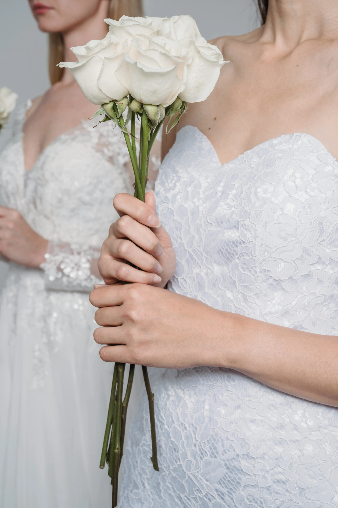
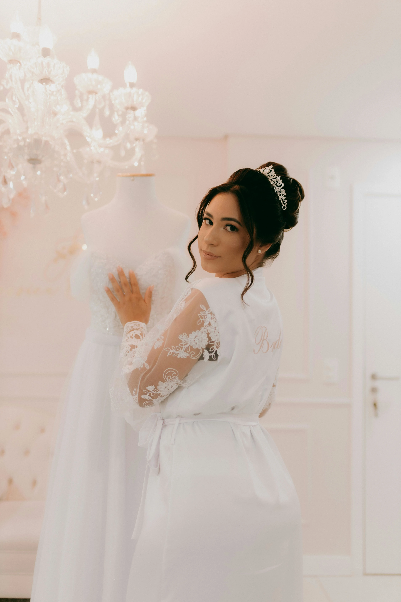
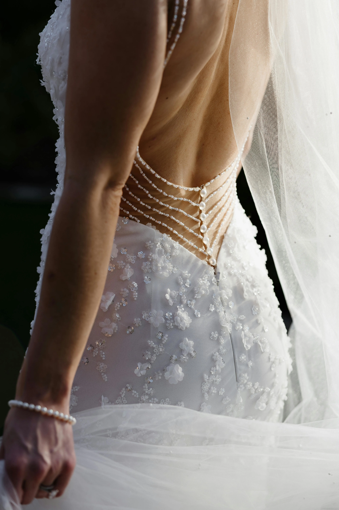
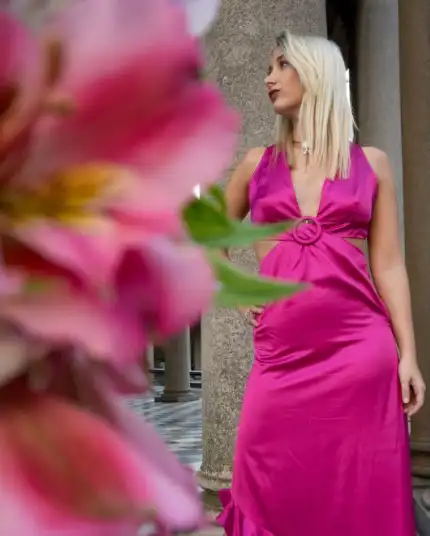
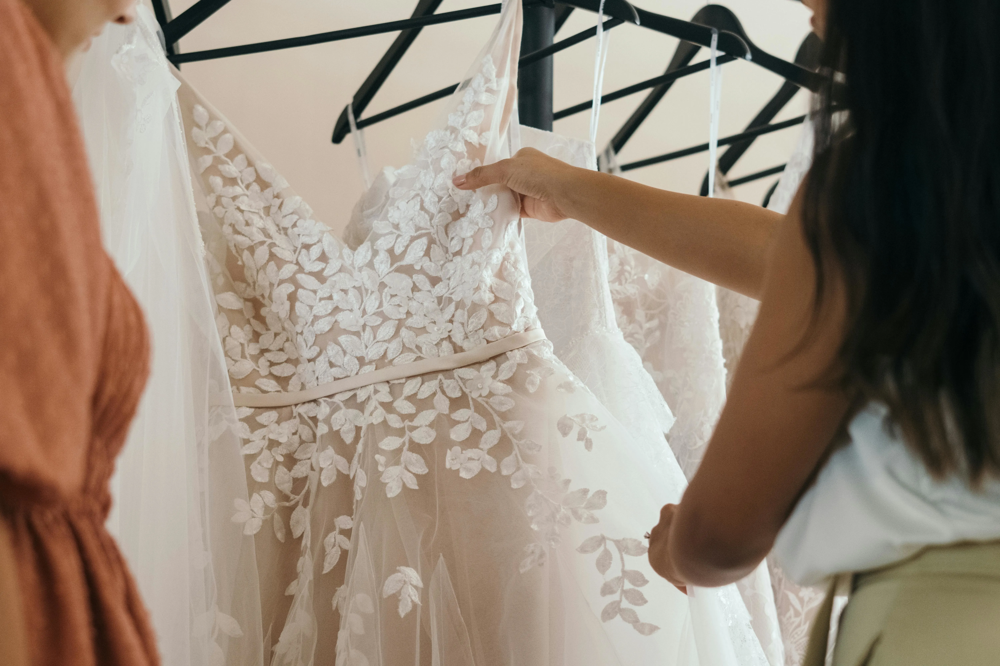
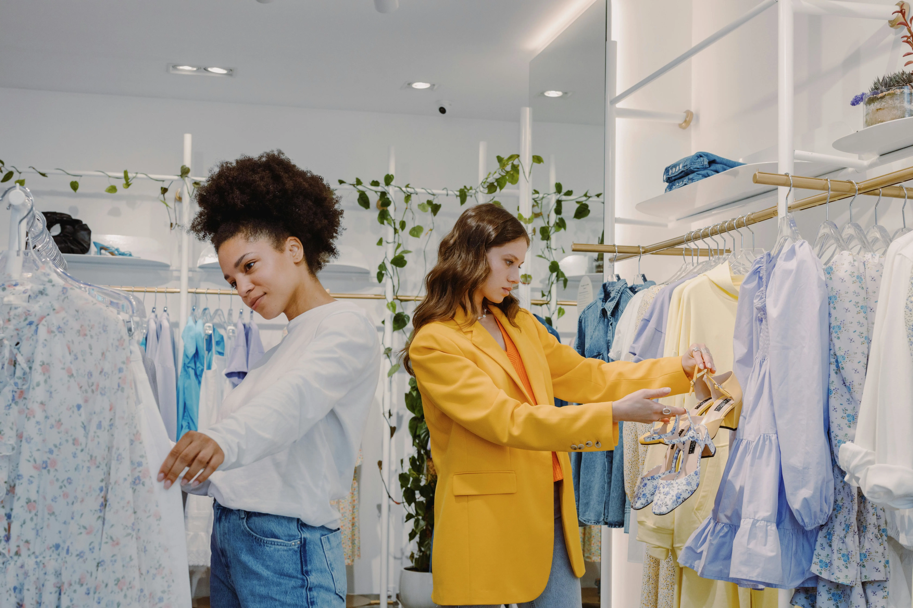

Lados Atelier
El arte de confeccionar un vestido ideal
NOVIAS
El dia de tu boda es ...
Uno de los momentos más especiales de tu vida. Es una celebración de amor, compromiso y nuevos comienzos. Por eso, elegir el vestido adecuado es una decisión significativa. Optar por un vestido de novia hecho a medida no solo garantiza que te quedará perfecto, sino que convierte el proceso en una experiencia inolvidable.
Cada paso en la creación de un vestido a medida está diseñado exclusivamente para ti. Desde la elección de telas hasta el más mínimo detalle en el diseño, todo refleja tu personalidad y estilo. Además, trabajar de la mano con una diseñadora dedicada permite que tus sueños y visiones cobren vida de manera única.




Te asesoramos en...
El proceso de creación también es un viaje emocional. Cada prueba, cada ajuste y cada detalle seleccionado se convierten en recuerdos que atesorarás para siempre. Compartir estos momentos con tus seres queridos agrega un valor sentimental que ningún vestido listo para usar podría ofrecer.
Un vestido de novia a medida es una obra de arte exclusiva. Refleja no solo tu estilo, sino también tu historia de amor. Es una prenda que se adapta a ti en lugar de que tú te adaptes a ella, haciendo que te sientas única y especial en un día tan importante.
Quinceañeras
Invitadas

Luce excepcional
Asistir a un casamiento o a una fiesta de quince es una ocasión especial que merece un vestido que haga sentir única y espectacular a cualquier invitada. Optar por un vestido de fiesta hecho a medida es la manera perfecta de asegurarse de destacar con elegancia y estilo. A diferencia de los modelos prediseñados, un vestido personalizado se adapta perfectamente al cuerpo, resaltando las mejores cualidades y brindando una comodidad inigualable durante toda la celebración.
Además, un vestido hecho a medida permite expresar la personalidad y el gusto personal de una manera única. Desde la elección de las telas hasta los detalles en el diseño, cada aspecto se crea para reflejar el estilo individual de quien lo usa. Ya sea un corte clásico y sofisticado o un diseño moderno y audaz, la posibilidad de personalizarlo asegura que no habrá otro vestido igual en el evento, destacando con elegancia y originalidad.
Nosotras
Nuestro showroom
En nuestro showroom, encontrarás que interpretamos lo que buscas a la medida, exactamente lo que necesitas. ¡Acércate a nuestros locales en Montevideo o Punta del Este y vive la experiencia de elegir tu vestido ideal! Nuestro equipo te acompañará en cada paso para asegurarse de que cada detalle refleje tu estilo y personalidad.


En nuestro Atelier...
Descubre el vestido de tus sueños para tus 15 años. Diseñamos cada detalle para que brilles en tu gran día como la estrella que eres. Haz de este momento un recuerdo inolvidable.